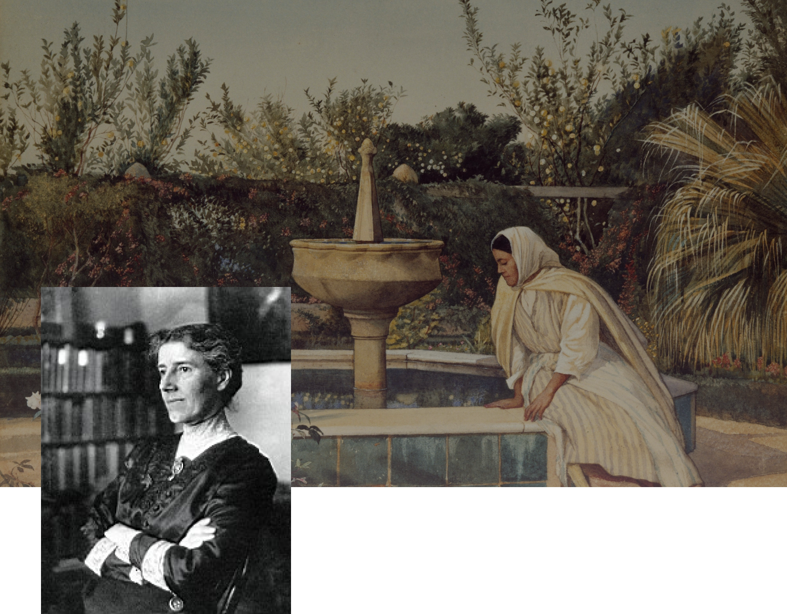
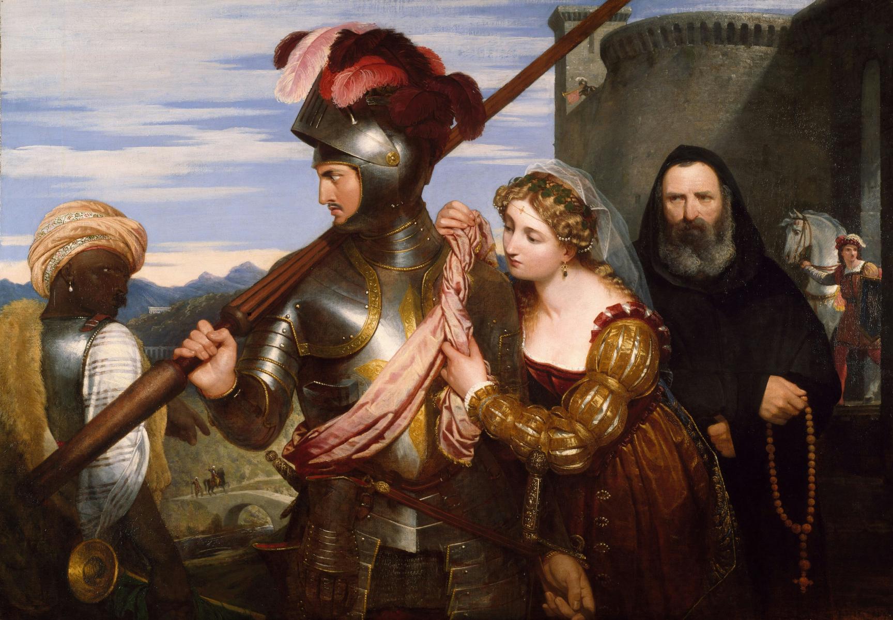

Шарлотта Перкінг
Гілмен
Американська письменниця, феміністка, соціологиня. Вона стала прикладом для наслідування майбутнього покоління феміністок.
Біографія

Моменти, що формують

Шарлотта Перкінс Гілмен народилася 8 липня 1860 року в Гартфорді. Коли дівчина була ще зовсім маленькою, її батько покинув сім’ю, залишивши матір наодинці з двома дітьми. Незважаючи на хворобу, мати докладала всіх зусиль, щоб прогодувати доньку та сина. В автобіографії Гілман згадувала, що її мати була стриманою у прояві любові до них, демонструючи ніжність лише тоді, коли вони спали.
Багато часу дівчинка проводила з кузинами,які з дитинства розповідали племінниці про важливість рівних прав для жінок.
В юності Шарлотта мала прізвисько “шибеник” і дружила переважно з чоловіками. Вона завжди дивувала вчителів своїм розумом і стараннями. ЇЇ улюбленим предметом була фізика.
У 18 років Перкінс потрапила на курси дизайну,які їй оплатив батько і згодом стала художницею торгових карт.У віці 24 років( 1884 рік) Перкінс одружилася з художником Ч. В. Стетсоном. Вона спершу відмовила йому,бо відчувала,що вони не підходять один одному. Але згодом вони все-таки одружилися. Вже в наступного році в них з’явилася донька.
Вона в щоденнику, що дуже хвора «якоюсь хворобою мозку», яка приносила страждання, невідчутні для будь-кого іншого, до такої міри, що її «розум зраджував їй». Вона не могла встати з ліжка, читати, писати, шити, розмовляти або годувати себе.Також замислювалась про самогубство. В той час письменниця перенесла важку післяпологову депресію,хоча тоді ще такого не діагностували.
У 1888
У 1935
Жінка пішла від чоловіка,що було теж рідкісним явищем. Вона почала подорожувати з донькою і саме тоді її моральний стан покращився. Вже 1894 році пара розлучилася і чоловік з донькою переїхали на схід. Після розлучення Шарлотта стала активісткою феміністських організацій і стала авторкою журналу «Bulletin».
Через смерть матері Перкінс поїхала на схід,де зустрілася зі своїм двоюрідним братом,Волл-Стріт Гоутоном Гілменом. В них зав`язалися романтичні стосунки і у 1900 році вони одружилися і жили в Нью-Йорку. У 1934 році чоловік раптово помер і жінка повернулась в Пасаден до дочки.
У 73 роки Шарлотта Перкінс Гілмен дізналася про свій діагноз — рак молочної залози. Попри тривалу боротьбу, вона зробила свідомий вибір завершити життя. 17 серпня 1935 року Гілман наклала на себе руки. У своїй передсмертній записці Шарлотта писала,що “вибрала хлороформ,замість раку”.


“Жовті шпалери”
“Оповідання стало бестселером «The Feminist Press». Шарлотта Гілмен стверджувала, що написала «Жовті шпалери», щоб протестувати проти такого поводження з жінками та зобразила власне, невдале лікування,що зрештою призвело до її самогубства.
У ньому розповідається про жінку,яка переживає післяпологову депресію. “Заради її блага” чоловік героїні ,Джон, ізолює героїню на три місяці в маєтку,де в одній з кімнат були жовті шпалери. Насправді він гадки не має,як сильно вона страждає, адже жінка вміло це приховує. Поступово жінка починає роздивлятись візерунок і починає бачити, як той він змінюється. Всі її думки повністю присвячені його загадкової привабливості. Цю фігуру зрештою сприймає як жінку, яка «повзає».
Центральне місце в історії займають жовті шпалери,які пригнічують її. Колір викликає огиду,але водночас заворожує. Саме в них героїня знаходить своє приховане я та свою свободу.
Жінка на шпалерах перебуває за ґратами, це є відображенням власних обмежень героїні. Вона почувається пригніченою та хворою; виражає себе за допомогою письма, але почувається виснаженою тому,що має приховувати свої думки від суспільства та чоловіка. ЇЇ прагнення самовиражатися долає навіть тиск суспільства: «Я все-таки деякий час писала, незважаючи на них» .
Боротьба за визволення та зрештою втеча жінки з шпалер, звідки вона «нарешті вийшла», є символом боротьби жінок за свободу від обмежень патріархального суспільства.
Ще одна особливість — важке ліжко, прибите цвяхами до підлоги. Воно символізує те,що жінка належить чоловіку, має йому підкорятися та виконувати обов’язки. ЇЇ чоловік ставиться до неї як до неповноцінної: «Джон сміється наді мною, звичайно, але цього чекаєш у шлюбі». Саме так авторка показує ,як суспільні норми руйнують особистість.
Визволення жінки з шпалер — не перемога, а нагадування,що необхідно чути голоси жінок та визнавати їхню боротьбу за свободу та самовираження.